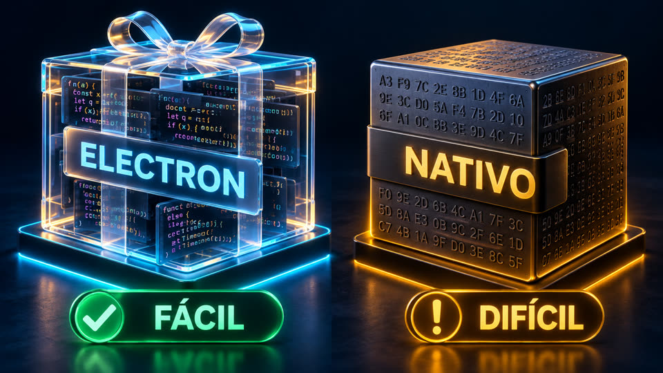
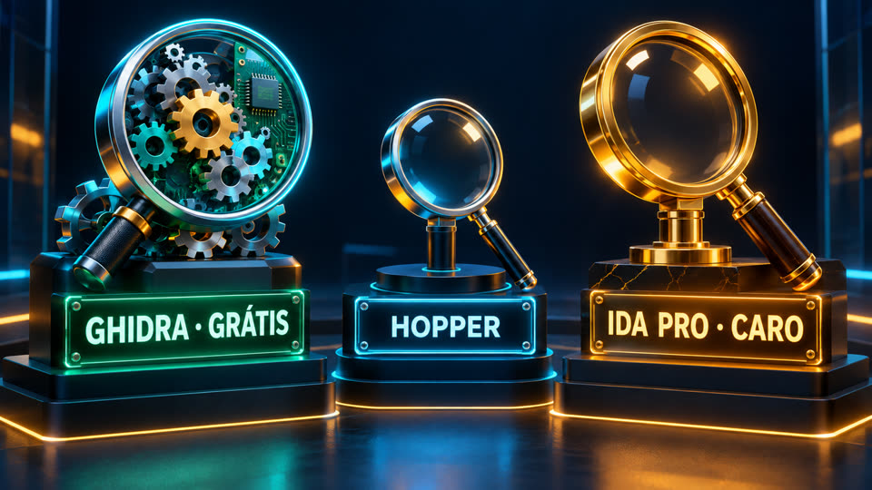
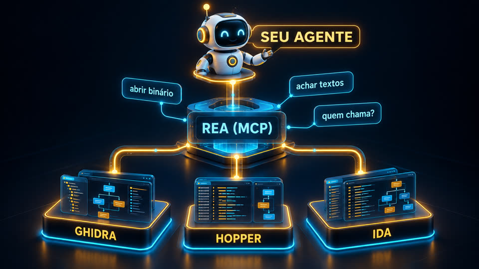
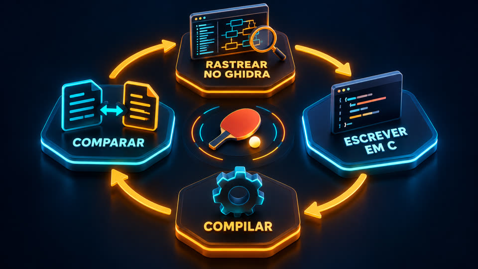
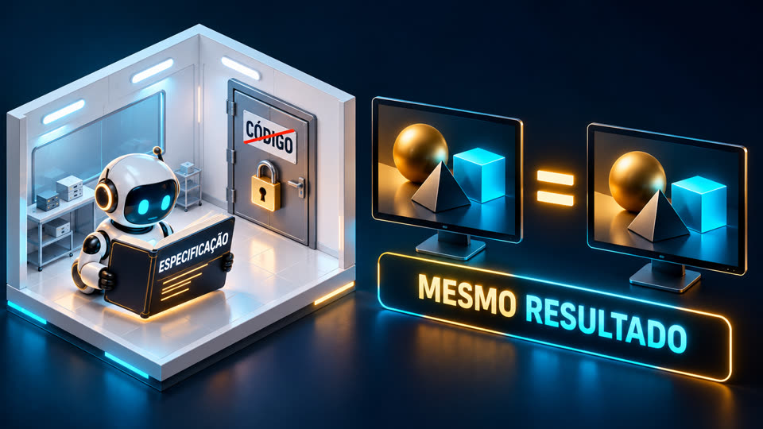

O REA dá ao Claude Code, Codex ou Cursor as ferramentas de engenharia reversa. Aqui você entende a tecnologia, vê os casos reais e descobre se vale pra você.
Engenharia reversa é descobrir como um programa funciona olhando só o executável, sem o código-fonte. O REA (Reverse Engineer Anything) é uma ferramenta aberta que liga o seu agente de IA a descompiladores como o Ghidra, da NSA, e devolve as conclusões com a prova e os limites de cada uma. Serve para desenvolvedores, gente de segurança e quem estuda software. Este guia reúne os links, explica tudo em português, mostra casos reais e um teste feito aqui. Para usar, você precisa de Node.js e de um agente de IA no terminal.
O REA não é um descompilador novo. Ele dá ao agente comandos simples em cima do Ghidra, do Hopper e do IDA, que antes levavam semanas pra dominar.
Abre binários nativos (Mac, Windows, Linux), apps Electron/JavaScript, .NET, Android e sites, e mostra como uma função funciona.
Cada resposta vem em quatro partes: evidência, mapa recuperado, limites e o que ficou sem resposta. Nada de parágrafo "confia em mim".
A análise roda localmente. O programa analisado não é enviado; só os resultados vão para o modelo do seu agente.
Compilar apaga nomes, tipos e comentários. Engenharia reversa é o caminho de volta, e o REA põe o agente para fazer esse caminho.



Para apps JavaScript/Electron basta o Node. Para binários nativos, um descompilador instalado.
Versões 22.19+, 24.11+ ou 26+ (23 e 25 não são suportadas).
node -vClaude Code, Claude Desktop, Codex, Cursor, Gemini CLI, Windsurf, OpenCode, Copilot CLI, VS Code e outros.
claude --versionGhidra (grátis, precisa de Java), Hopper ou IDA. O setup pode instalar o Hopper, com sua permissão.
# Ghidra: baixe em github.com/NationalSecurityAgency/ghidra/releases
Dos três que o REA aceita, só o Ghidra é totalmente gratuito e aberto. O IDA tem uma versão Free, com limites.
| Ferramenta | Gratuita? | Código aberto? | Preço |
|---|---|---|---|
| Ghidra | Sim | Sim | US$ 0 |
| Hopper | Teste grátis | Não | Licença paga |
| IDA | Versão Free | Não | Pro a partir de ~US$ 1.099/ano |
Feito pela NSA, roda em Windows, Linux e Mac, descompila e aceita automação por scripts. Sem custo de licença, inclusive para uso comercial.
Comercial, com teste gratuito. A versão atual anuncia integração MCP nativa, o que interessa para agentes de IA.
O IDA Free só cobre x86/x64 e uso não comercial, e não traz o IDAPython dos planos pagos, o que atrapalha a automação.
| Agente de IA (Codex ou Claude Code) | Variável: assinatura ou tokens |
| REA + MCP | Grátis (MIT): faz a integração e a orquestração |
| Ghidra | Grátis e aberto |
Conclusão: para montar o seu próprio sistema de engenharia reversa com agentes, comece com REA + Ghidra + Codex. Não há licença de descompilador para pagar, e a análise roda numa máquina Windows ou Linux, inclusive numa VPS bem configurada. O custo principal fica no processamento e nos tokens da IA, se você usar modelo pago. Preços mudam: confira nos sites oficiais antes de comprar.
Comandos do próprio projeto. O REA muda quase todo dia: confira a versão antes.
A análise estática de um app Electron não precisa de Ghidra nem de MCP, e não executa o app. Aponte para a pasta ou o app.asar.
npx -y rea-agents@latest analyze-javascript-application /caminho/absoluto/app.asar --json
O setup mostra o plano, faz cópia da sua configuração e pergunta antes de mudar. Registra o servidor MCP e instala o método de investigação (skill).
npx rea-agents setup # reinicie o agente depois
O doctor com escopo testa um agente ou um motor específico, sem reprovar por algo que você nem vai usar.
rea doctor --client claude_code --json rea doctor --provider ghidra --json
Em linguagem normal, com um programa seu ou que você tem autorização para analisar.
"Entenda como a busca funciona no app X, me mostre a evidência
e faça algo parecido no meu projeto."
Números tirados dos repositórios e do site oficial em 10/10/2026.
FUN_…). O agente achou a função certa, recuperou as 3 regras do código e escreveu um gerador: AGNT-1001 abriu.

Avaliação feita a partir da documentação, dos casos publicados e de um teste nesta máquina.
• Desenvolvedores que querem entender como um app muito bom resolve busca, sincronização ou área de transferência.
• Segurança e privacidade: auditar os apps da sua máquina e ver o que mandam pra fora.
• Recuperar lógica de um programa seu cujo código se perdeu.
• Estudo, CTF e preservação de software antigo.
• Quem cria ferramentas para IA: o formato evidência · mapa · limites · desconhecidos é um ótimo modelo.
• Quem não usa terminal: exige Node e paciência com versões que mudam todo dia (5.0 → 6.3 em três dias).
• Copiar o produto de um concorrente: arriscado juridicamente e perde o ponto.
• Programas muito protegidos (VMProtect, ofuscação pesada) ou com a lógica no servidor.
• Esperar milagre de qualquer modelo: em binários protegidos de propósito, até os melhores modelos resolvem só parte dos casos (SRE-Bench).
Rodamos o REA 6.3.0 (analyze-javascript-application, sem Ghidra e sem MCP) num servidor Linux ARM. Funcionou num app Node nosso (97 arquivos, 3,5 MB): em 20 s e 1,3 GB de RAM devolveu um grafo com 2.109 nós e 3.104 ligações, 2.508 achados e 5 limitações declaradas, sem executar o app. Travou em dois alvos que tinham um único arquivo JS gigante (o bundle de um app Electron instalado e o typescript/_tsc.js, de 6 MB): ficou a 100% de CPU por mais de 20 min no mesmo arquivo, ignorou o SIGTERM e só parou com kill -9. Conclusão: funciona bem em projetos de tamanho normal; em apps grandes, rode com teto de tempo (timeout -s KILL) e sem node_modules. O JSON completo é enorme (241 MB aqui): no dia a dia, deixe o agente consultar pelo MCP em vez de ler o arquivo inteiro.
Para quem vende software: assuma que qualquer agente consegue mapear o seu app. O que protege são os dados, o servidor, a distribuição, a confiança e a velocidade, não o código fechado.
Projetos de terceiros. Estrelas e versões conferidas em 10/10/2026.
O REA: MCP + CLI de engenharia reversa para agentes. TypeScript, MIT, ~61 mil estrelas, versão 6.3.0.
Site oficial com guias ilustrados (nativo, JavaScript, navegador) e os estudos de caso.
Descompilador gratuito e aberto da NSA. Java, Apache-2.0, ~82 mil estrelas, versão 12.1.4.
DX-Ball 1.07 reconstruído em C/C++ com REA + Ghidra, testado byte a byte. MIT. Os arquivos do jogo não vêm junto.
Reconstrução de um jogo de PC-98 (DOS, 16 bits): o cálculo dos anéis de tiros. MIT.
Photoshop refeito do zero em Rust (clean room), ~39 mil estrelas, alfa. Também FilmCraft (Premiere) e LightCraft (Lightroom), da suíte ArtCraft.
Benchmark da Universidade Columbia: agentes fazendo engenharia reversa de binários com proteção. Em desenvolvimento.
README em PT/EN/ES com os links e a avaliação.
O próprio REA avisa: a responsabilidade é sua.
rea update ou npx rea-agents@latest setup antes de reportar um problema.